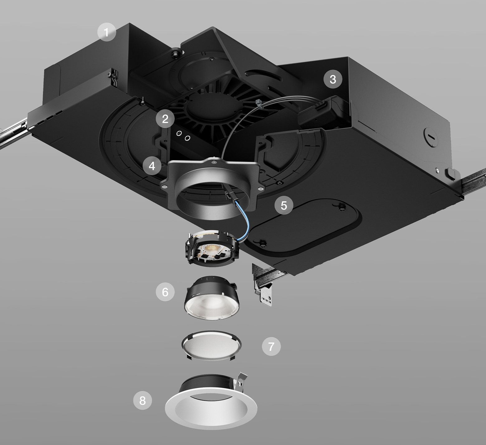

Overview
During my six-month co-op at Lutron Electronics, I joined the tool design team responsible for
developing manufacturing and assembly tools for the Ketra D2 Downlight product line. This experience
transformed my approach to engineering design, teaching me that successful tools must balance
technical precision with human factors and manufacturing realities.
Note: Tooling designs are under NDA. The image shown is of the Ketra D2 Downlight product I designed fixtures for. I am happy to walk through my design process and tooling work in conversation.
2
Tools Certified & Deployed
10+
Tolerance Stack Components

Exploded view of the Ketra D2 Downlight, the product I designed tooling and testing fixtures for
Engineering Contributions
Primary Tool Development
The Ketra D2 Downlight housing assembly represented one of the final and most critical steps in the
production line. I designed a specialized tool to ensure precise component placement within the rectangular
enclosure while protecting sensitive electronics and maintaining strict tolerances across more than 10 interfacing parts.
Design Process & Collaboration
- Product Team Integration: Regular meetings to understand all assembly scenarios and edge cases
- Manufacturing Engineering Partnership: Collaborated on operator workflows and ergonomic requirements
- Operator Feedback Integration: Conducted observational studies and incorporated direct feedback from assembly line operators
- Interactive 3D Modeling: Developed dynamic models in Creo Parametric to simulate tool motion and interaction
Technical Achievements
- Tolerance Management: Designed to accommodate cumulative tolerances across 10+ stacked components while maintaining ±0.005" positioning accuracy
- Component Protection: Incorporated soft-touch surfaces and controlled contact points to prevent damage
- Ergonomic Design: Optimized handle placement and weight distribution for 8-hour shift comfort
- Poka-Yoke Implementation: Integrated mistake-proofing features that made incorrect usage physically impossible
Note: Detailed tooling designs are under NDA. I am happy to walk through my design process and reference the product architecture in conversation.
Additional Tool Development
Beyond the primary housing assembly tool, I developed four additional fixtures for smaller component assemblies.
These projects provided valuable experience in rapid iteration through 3D printing, design for manufacturability,
and cost optimization while maintaining quality standards.
Professional Development
This co-op deepened my understanding of tolerance analysis, design for manufacturability, and how to communicate
technical decisions across engineering and production teams.
Collaboration & Documentation
I partnered with manufacturing engineers to translate designs into producible solutions and developed comprehensive
documentation for all tools, including assembly procedures, maintenance schedules, and design rationale, to ensure
continuity after my co-op ended.
Tools & Technologies
Creo Parametric
3D Printing (SLA/FDM)
Tolerance Analysis
Motion Simulation
Design for Manufacturing
Ergonomic Design
Poka-Yoke
Rapid Prototyping
Project Management
Technical Documentation